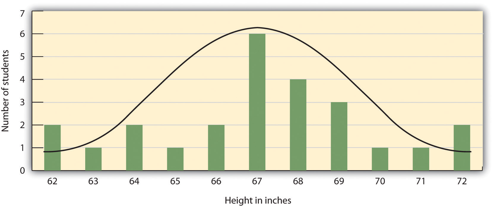
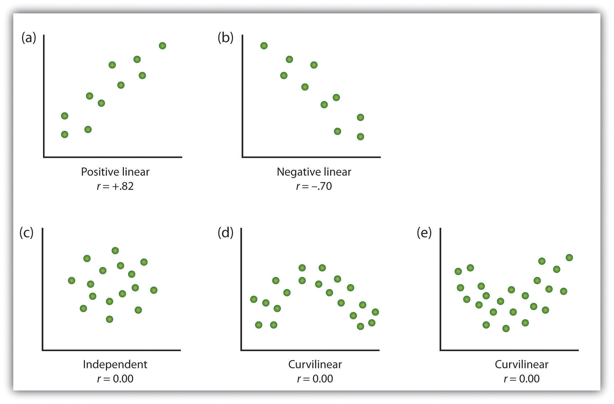
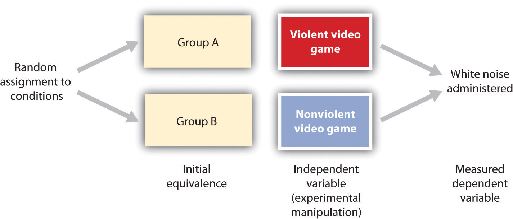
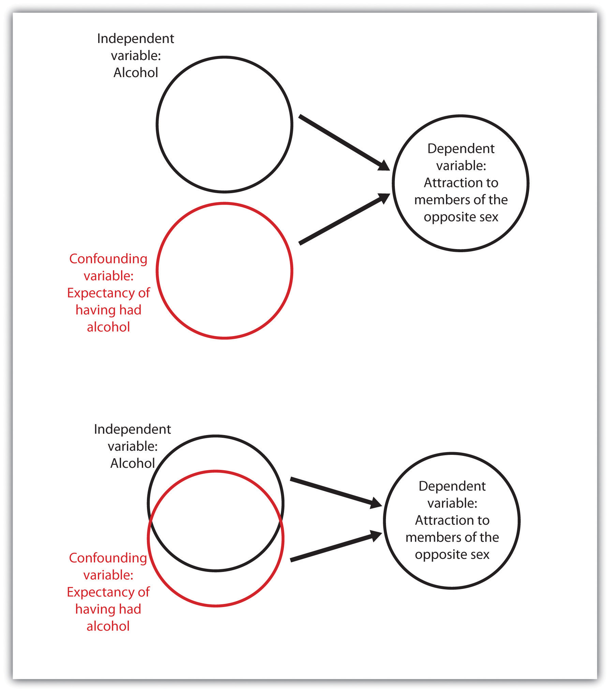

Psychologists study the behavior of both humans and animals, and the main purpose of this research is to help us understand people and to improve the quality of human lives. The results of psychological research are relevant to problems such as learning and memory, homelessness, psychological disorders, family instability, and aggressive behavior and violence. Psychological research is used in a range of important areas, from public policy to driver safety. It guides court rulings with respect to racism and sexism (Brown v. Board of Education, 1954; Fiske, Bersoff, Borgida, Deaux, & Heilman, 1991),Brown v. Board of Education, 347 U.S. 483 (1954); Fiske, S. T., Bersoff, D. N., Borgida, E., Deaux, K., & Heilman, M. E. (1991). Social science research on trial: Use of sex stereotyping research in Price Waterhouse v. Hopkins. American Psychologist, 46(10), 1049–1060. as well as court procedure, in the use of lie detectors during criminal trials, for example (Saxe, Dougherty, & Cross, 1985).Saxe, L., Dougherty, D., & Cross, T. (1985). The validity of polygraph testing: Scientific analysis and public controversy. American Psychologist, 40, 355–366. Psychological research helps us understand how driver behavior affects safety (Fajen & Warren, 2003),Fajen, B. R., & Warren, W. H. (2003). Behavioral dynamics of steering, obstacle avoidance, and route selection. Journal of Experimental Psychology: Human Perception and Performance, 29(2), 343–362. which methods of educating children are most effective (Alexander & Winne, 2006; Woolfolk-Hoy, 2005),Alexander, P. A., & Winne, P. H. (Eds.). (2006). Handbook of educational psychology (2nd ed.). Mahwah, NJ: Lawrence Erlbaum Associates; Woolfolk-Hoy, A. E. (2005). Educational psychology (9th ed.). Boston, MA: Allyn & Bacon. how to best detect deception (DePaulo et al., 2003),DePaulo, B. M., Lindsay, J. J., Malone, B. E., Muhlenbruck, L., Charlton, K., & Cooper, H. (2003). Cues to deception. Psychological Bulletin, 129(1), 74–118. and the causes of terrorism (Borum, 2004).Borum, R. (2004). Psychology of terrorism. Tampa: University of South Florida.
Some psychological research is basic research. Basic researchResearch that answers fundamental questions about behavior. is research that answers fundamental questions about behavior. For instance, biopsychologists study how nerves conduct impulses from the receptors in the skin to the brain, and cognitive psychologists investigate how different types of studying influence memory for pictures and words. There is no particular reason to examine such things except to acquire a better knowledge of how these processes occur. Applied researchResearch that investigates issues that have implications for everyday life and provides solutions to everyday problems. is research that investigates issues that have implications for everyday life and provides solutions to everyday problems. Applied research has been conducted to study, among many other things, the most effective methods for reducing depression, the types of advertising campaigns that serve to reduce drug and alcohol abuse, the key predictors of managerial success in business, and the indicators of effective government programs, such as Head Start.
Basic research and applied research inform each other, and advances in science occur more rapidly when each type of research is conducted (Lewin, 1999).Lewin, K. (1999). The complete social scientist: A Kurt Lewin reader (M. Gold, Ed.). Washington, DC: American Psychological Association. For instance, although research concerning the role of practice on memory for lists of words is basic in orientation, the results could potentially be applied to help children learn to read. Correspondingly, psychologist-practitioners who wish to reduce the spread of AIDS or to promote volunteering frequently base their programs on the results of basic research. This basic AIDS or volunteering research is then applied to help change people’s attitudes and behaviors.
The results of psychological research are reported primarily in research articles published in scientific journals, and your instructor may require you to read some of these. The research reported in scientific journals has been evaluated, critiqued, and improved by scientists in the field through the process of peer review. In this book there are many citations to original research articles, and I encourage you to read those reports when you find a topic interesting. Most of these papers are readily available online through your college or university library. It is only by reading the original reports that you will really see how the research process works. Some of the most important journals in psychology are provided here for your information.
The following is a list of some of the most important journals in various subdisciplines of psychology. The research articles in these journals are likely to be available in your college library. You should try to read the primary source material in these journals when you can.
General Psychology
Biopsychology and Neuroscience
Clinical and Counseling Psychology
Cognitive Psychology
Cross-Cultural, Personality, and Social Psychology
Developmental Psychology
Educational and School Psychology
Environmental, Industrial, and Organizational Psychology
In this chapter you will learn how psychologists develop and test their research ideas; how they measure the thoughts, feelings, and behavior of individuals; and how they analyze and interpret the data they collect. To really understand psychology, you must also understand how and why the research you are reading about was conducted and what the collected data mean. Learning about the principles and practices of psychological research will allow you to critically read, interpret, and evaluate research.
In addition to helping you learn the material in this course, the ability to interpret and conduct research is also useful in many of the careers that you might choose. For instance, advertising and marketing researchers study how to make advertising more effective, health and medical researchers study the impact of behaviors such as drug use and smoking on illness, and computer scientists study how people interact with computers. Furthermore, even if you are not planning a career as a researcher, jobs in almost any area of social, medical, or mental health science require that a worker be informed about psychological research.
Psychologists aren’t the only people who seek to understand human behavior and solve social problems. Philosophers, religious leaders, and politicians, among others, also strive to provide explanations for human behavior. But psychologists believe that research is the best tool for understanding human beings and their relationships with others. Rather than accepting the claim of a philosopher that people do (or do not) have free will, a psychologist would collect data to empirically test whether or not people are able to actively control their own behavior. Rather than accepting a politician’s contention that creating (or abandoning) a new center for mental health will improve the lives of individuals in the inner city, a psychologist would empirically assess the effects of receiving mental health treatment on the quality of life of the recipients. The statements made by psychologists are empiricalBased on systematic collection and analysis of data., which means they are based on systematic collection and analysis of data.
All scientists (whether they are physicists, chemists, biologists, sociologists, or psychologists) are engaged in the basic processes of collecting data and drawing conclusions about those data. The methods used by scientists have developed over many years and provide a common framework for developing, organizing, and sharing information. The scientific methodThe set of assumptions, rules, and procedures scientists use to conduct research. is the set of assumptions, rules, and procedures scientists use to conduct research.
In addition to requiring that science be empirical, the scientific method demands that the procedures used be objectiveFree from the personal bias or emotions of the scientist., or free from the personal bias or emotions of the scientist. The scientific method proscribes how scientists collect and analyze data, how they draw conclusions from data, and how they share data with others. These rules increase objectivity by placing data under the scrutiny of other scientists and even the public at large. Because data are reported objectively, other scientists know exactly how the scientist collected and analyzed the data. This means that they do not have to rely only on the scientist’s own interpretation of the data; they may draw their own, potentially different, conclusions.
Most new research is designed to replicate—that is, to repeat, add to, or modify—previous research findings. The scientific method therefore results in an accumulation of scientific knowledge through the reporting of research and the addition to and modifications of these reported findings by other scientists.
One goal of research is to organize information into meaningful statements that can be applied in many situations. Principles that are so general as to apply to all situations in a given domain of inquiry are known as lawsPrinciples that are so general as to apply to all situations in a given domain of inquiry.. There are well-known laws in the physical sciences, such as the law of gravity and the laws of thermodynamics, and there are some universally accepted laws in psychology, such as the law of effect and Weber’s law. But because laws are very general principles and their validity has already been well established, they are themselves rarely directly subjected to scientific test.
The next step down from laws in the hierarchy of organizing principles is theory. A theoryAn integrated set of principles that explains and predicts many, but not all, observed relationships within a given domain of inquiry. is an integrated set of principles that explains and predicts many, but not all, observed relationships within a given domain of inquiry. One example of an important theory in psychology is the stage theory of cognitive development proposed by the Swiss psychologist Jean Piaget. The theory states that children pass through a series of cognitive stages as they grow, each of which must be mastered in succession before movement to the next cognitive stage can occur. This is an extremely useful theory in human development because it can be applied to many different content areas and can be tested in many different ways.
Good theories have four important characteristics. First, good theories are general, meaning they summarize many different outcomes. Second, they are parsimonious, meaning they provide the simplest possible account of those outcomes. The stage theory of cognitive development meets both of these requirements. It can account for developmental changes in behavior across a wide variety of domains, and yet it does so parsimoniously—by hypothesizing a simple set of cognitive stages. Third, good theories provide ideas for future research. The stage theory of cognitive development has been applied not only to learning about cognitive skills, but also to the study of children’s moral (Kohlberg, 1966)Kohlberg, L. (1966). A cognitive-developmental analysis of children’s sex-role concepts and attitudes. In E. E. Maccoby (Ed.), The development of sex differences. Stanford, CA: Stanford University Press. and gender (Ruble & Martin, 1998)Ruble, D., & Martin, C. (1998). Gender development. In W. Damon (Ed.), Handbook of child psychology (5th ed., pp. 933–1016). New York, NY: John Wiley & Sons. development.
Finally, good theories are falsifiableA characteristic of a theory or research hypothesis in which the variables of interest can be adequately measured and the predicted relationships among the variables can be shown through research to be incorrect. (Popper, 1959),Popper, K. R. (1959). The logic of scientific discovery. New York, NY: Basic Books. which means the variables of interest can be adequately measured and the relationships between the variables that are predicted by the theory can be shown through research to be incorrect. The stage theory of cognitive development is falsifiable because the stages of cognitive reasoning can be measured and because if research discovers, for instance, that children learn new tasks before they have reached the cognitive stage hypothesized to be required for that task, then the theory will be shown to be incorrect.
No single theory is able to account for all behavior in all cases. Rather, theories are each limited in that they make accurate predictions in some situations or for some people but not in other situations or for other people. As a result, there is a constant exchange between theory and data: Existing theories are modified on the basis of collected data, and the new modified theories then make new predictions that are tested by new data, and so forth. When a better theory is found, it will replace the old one. This is part of the accumulation of scientific knowledge.
Theories are usually framed too broadly to be tested in a single experiment. Therefore, scientists use a more precise statement of the presumed relationship among specific parts of a theory—a research hypothesis—as the basis for their research. A research hypothesisA specific and falsifiable prediction about the relationship between or among two or more variables. is a specific and falsifiable prediction about the relationship between or among two or more variables, where a variableAny attribute that can assume different values among different people or across different times or places. is any attribute that can assume different values among different people or across different times or places. The research hypothesis states the existence of a relationship between the variables of interest and the specific direction of that relationship. For instance, the research hypothesis “Using marijuana will reduce learning” predicts that there is a relationship between a variable “using marijuana” and another variable called “learning.” Similarly, in the research hypothesis “Participating in psychotherapy will reduce anxiety,” the variables that are expected to be related are “participating in psychotherapy” and “level of anxiety.”
When stated in an abstract manner, the ideas that form the basis of a research hypothesis are known as conceptual variables. Conceptual variablesAbstract ideas that form the basis of research hypotheses. are abstract ideas that form the basis of research hypotheses. Sometimes the conceptual variables are rather simple—for instance, “age,” “gender,” or “weight.” In other cases the conceptual variables represent more complex ideas, such as “anxiety,” “cognitive development,” “learning,” self-esteem,” or “sexism.”
The first step in testing a research hypothesis involves turning the conceptual variables into measured variablesVariables consisting of numbers that represent the conceptual variables., which are variables consisting of numbers that represent the conceptual variables. For instance, the conceptual variable “participating in psychotherapy” could be represented as the measured variable “number of psychotherapy hours the patient has accrued” and the conceptual variable “using marijuana” could be assessed by having the research participants rate, on a scale from 1 to 10, how often they use marijuana or by administering a blood test that measures the presence of the chemicals in marijuana.
Psychologists use the term operational definitionA precise statement of how a conceptual variable is turned into a measured variable. to refer to a precise statement of how a conceptual variable is turned into a measured variable. The relationship between conceptual and measured variables in a research hypothesis is diagrammed in Figure 2.1 "Diagram of a Research Hypothesis". The conceptual variables are represented within circles at the top of the figure, and the measured variables are represented within squares at the bottom. The two vertical arrows, which lead from the conceptual variables to the measured variables, represent the operational definitions of the two variables. The arrows indicate the expectation that changes in the conceptual variables (psychotherapy and anxiety in this example) will cause changes in the corresponding measured variables. The measured variables are then used to draw inferences about the conceptual variables.
Figure 2.1 Diagram of a Research Hypothesis

In this research hypothesis, the conceptual variable of attending psychotherapy is operationalized using the number of hours of psychotherapy the client has completed, and the conceptual variable of anxiety is operationalized using self-reported levels of anxiety. The research hypothesis is that more psychotherapy will be related to less reported anxiety.
Table 2.1 "Examples of the Operational Definitions of Conceptual Variables That Have Been Used in Psychological Research" lists some potential operational definitions of conceptual variables that have been used in psychological research. As you read through this list, note that in contrast to the abstract conceptual variables, the measured variables are very specific. This specificity is important for two reasons. First, more specific definitions mean that there is less danger that the collected data will be misunderstood by others. Second, specific definitions will enable future researchers to replicate the research.
Table 2.1 Examples of the Operational Definitions of Conceptual Variables That Have Been Used in Psychological Research
| Conceptual variable | Operational definitions |
|---|---|
| Aggression |
|
| Interpersonal attraction |
|
| Employee satisfaction |
|
| Decision-making skills |
|
| Depression |
|
One of the questions that all scientists must address concerns the ethics of their research. Physicists are concerned about the potentially harmful outcomes of their experiments with nuclear materials. Biologists worry about the potential outcomes of creating genetically engineered human babies. Medical researchers agonize over the ethics of withholding potentially beneficial drugs from control groups in clinical trials. Likewise, psychologists are continually considering the ethics of their research.
Research in psychology may cause some stress, harm, or inconvenience for the people who participate in that research. For instance, researchers may require introductory psychology students to participate in research projects and then deceive these students, at least temporarily, about the nature of the research. Psychologists may induce stress, anxiety, or negative moods in their participants, expose them to weak electrical shocks, or convince them to behave in ways that violate their moral standards. And researchers may sometimes use animals in their research, potentially harming them in the process.
Decisions about whether research is ethical are made using established ethical codes developed by scientific organizations, such as the American Psychological Association, and federal governments. In the United States, the Department of Health and Human Services provides the guidelines for ethical standards in research. Some research, such as the research conducted by the Nazis on prisoners during World War II, is perceived as immoral by almost everyone. Other procedures, such as the use of animals in research testing the effectiveness of drugs, are more controversial.
Scientific research has provided information that has improved the lives of many people. Therefore, it is unreasonable to argue that because scientific research has costs, no research should be conducted. This argument fails to consider the fact that there are significant costs to not doing research and that these costs may be greater than the potential costs of conducting the research (Rosenthal, 1994).Rosenthal, R. (1994). Science and ethics in conducting, analyzing, and reporting psychological research. Psychological Science, 5, 127–134. In each case, before beginning to conduct the research, scientists have attempted to determine the potential risks and benefits of the research and have come to the conclusion that the potential benefits of conducting the research outweigh the potential costs to the research participants.
This list presents some of the most important factors that psychologists take into consideration when designing their research. The most direct ethical concern of the scientist is to prevent harm to the research participants. One example is the well-known research of Stanley Milgram (1974)Milgram, S. (1974). Obedience to authority: An experimental view. New York, NY: Harper and Row. investigating obedience to authority. In these studies, participants were induced by an experimenter to administer electric shocks to another person so that Milgram could study the extent to which they would obey the demands of an authority figure. Most participants evidenced high levels of stress resulting from the psychological conflict they experienced between engaging in aggressive and dangerous behavior and following the instructions of the experimenter. Studies such as those by Milgram are no longer conducted because the scientific community is now much more sensitized to the potential of such procedures to create emotional discomfort or harm.
Another goal of ethical research is to guarantee that participants have free choice regarding whether they wish to participate in research. Students in psychology classes may be allowed, or even required, to participate in research, but they are also always given an option to choose a different study to be in, or to perform other activities instead. And once an experiment begins, the research participant is always free to leave the experiment if he or she wishes to. Concerns with free choice also occur in institutional settings, such as in schools, hospitals, corporations, and prisons, when individuals are required by the institutions to take certain tests, or when employees are told or asked to participate in research.
Researchers must also protect the privacy of the research participants. In some cases data can be kept anonymous by not having the respondents put any identifying information on their questionnaires. In other cases the data cannot be anonymous because the researcher needs to keep track of which respondent contributed the data. In this case one technique is to have each participant use a unique code number to identify his or her data, such as the last four digits of the student ID number. In this way the researcher can keep track of which person completed which questionnaire, but no one will be able to connect the data with the individual who contributed them.
Perhaps the most widespread ethical concern to the participants in behavioral research is the extent to which researchers employ deception. DeceptionA situation that occurs whenever research participants are not completely and fully informed about the nature of the research project before participating in it. occurs whenever research participants are not completely and fully informed about the nature of the research project before participating in it. Deception may occur in an active way, such as when the researcher tells the participants that he or she is studying learning when in fact the experiment really concerns obedience to authority. In other cases the deception is more passive, such as when participants are not told about the hypothesis being studied or the potential use of the data being collected.
Some researchers have argued that no deception should ever be used in any research (Baumrind, 1985).Baumrind, D. (1985). Research using intentional deception: Ethical issues revisited. American Psychologist, 40, 165–174. They argue that participants should always be told the complete truth about the nature of the research they are in, and that when participants are deceived there will be negative consequences, such as the possibility that participants may arrive at other studies already expecting to be deceived. Other psychologists defend the use of deception on the grounds that it is needed to get participants to act naturally and to enable the study of psychological phenomena that might not otherwise get investigated. They argue that it would be impossible to study topics such as altruism, aggression, obedience, and stereotyping without using deception because if participants were informed ahead of time what the study involved, this knowledge would certainly change their behavior. The codes of ethics of the American Psychological Association and other organizations allow researchers to use deception, but these codes also require them to explicitly consider how their research might be conducted without the use of deception.
Making decisions about the ethics of research involves weighing the costs and benefits of conducting versus not conducting a given research project. The costs involve potential harm to the research participants and to the field, whereas the benefits include the potential for advancing knowledge about human behavior and offering various advantages, some educational, to the individual participants. Most generally, the ethics of a given research project are determined through a cost-benefit analysis, in which the costs are compared to the benefits. If the potential costs of the research appear to outweigh any potential benefits that might come from it, then the research should not proceed.
Arriving at a cost-benefit ratio is not simple. For one thing, there is no way to know ahead of time what the effects of a given procedure will be on every person or animal who participates or what benefit to society the research is likely to produce. In addition, what is ethical is defined by the current state of thinking within society, and thus perceived costs and benefits change over time. The U.S. Department of Health and Human Services regulations require that all universities receiving funds from the department set up an Institutional Review Board (IRB) to determine whether proposed research meets department regulations. The Institutional Review Board (IRB)A committee of at least five members whose goal it is to determine cost-benefit ratio of research conducted within an institution. is a committee of at least five members whose goal it is to determine the cost-benefit ratio of research conducted within an institution. The IRB approves the procedures of all the research conducted at the institution before the research can begin. The board may suggest modifications to the procedures, or (in rare cases) it may inform the scientist that the research violates Department of Health and Human Services guidelines and thus cannot be conducted at all.
One important tool for ensuring that research is ethical is the use of informed consent. A sample informed consent form is shown in Figure 2.2 "Sample Consent Form". Informed consentA procedure, conducted before a participant begins a research session, designed to explain the research procedures and inform the participant of his or her rights during the investigation., conducted before a participant begins a research session, is designed to explain the research procedures and inform the participant of his or her rights during the investigation. The informed consent explains as much as possible about the true nature of the study, particularly everything that might be expected to influence willingness to participate, but it may in some cases withhold some information that allows the study to work.
Figure 2.2 Sample Consent Form

The informed consent form explains the research procedures and informs the participant of his or her rights during the investigation.
Source: Adapted from Stangor, C. (2011). Research methods for the behavioral sciences (4th ed.). Mountain View, CA: Cengage.
Because participating in research has the potential for producing long-term changes in the research participants, all participants should be fully debriefed immediately after their participation. The debriefingA procedure designed to fully explain the purposes and procedures of the research and remove any harmful aftereffects of participation. is a procedure designed to fully explain the purposes and procedures of the research and remove any harmful aftereffects of participation.
Because animals make up an important part of the natural world, and because some research cannot be conducted using humans, animals are also participants in psychological research. Most psychological research using animals is now conducted with rats, mice, and birds, and the use of other animals in research is declining (Thomas & Blackman, 1992).Thomas, G., & Blackman, D. (1992). The future of animal studies in psychology. American Psychologist, 47, 1678. As with ethical decisions involving human participants, a set of basic principles has been developed that helps researchers make informed decisions about such research; a summary is shown below.
The following are some of the most important ethical principles from the American Psychological Association’s guidelines on research with animals.
Because the use of animals in research involves a personal value, people naturally disagree about this practice. Although many people accept the value of such research (Plous, 1996),Plous, S. (1996). Attitudes toward the use of animals in psychological research and education. Psychological Science, 7, 352–358. a minority of people, including animal-rights activists, believes that it is ethically wrong to conduct research on animals. This argument is based on the assumption that because animals are living creatures just as humans are, no harm should ever be done to them.
Most scientists, however, reject this view. They argue that such beliefs ignore the potential benefits that have and continue to come from research with animals. For instance, drugs that can reduce the incidence of cancer or AIDS may first be tested on animals, and surgery that can save human lives may first be practiced on animals. Research on animals has also led to a better understanding of the physiological causes of depression, phobias, and stress, among other illnesses. In contrast to animal-rights activists, then, scientists believe that because there are many benefits that accrue from animal research, such research can and should continue as long as the humane treatment of the animals used in the research is guaranteed.
Psychologists agree that if their ideas and theories about human behavior are to be taken seriously, they must be backed up by data. However, the research of different psychologists is designed with different goals in mind, and the different goals require different approaches. These varying approaches, summarized in Table 2.2 "Characteristics of the Three Research Designs", are known as research designs. A research designAn approach used to collect, analyze, and interpret data. is the specific method a researcher uses to collect, analyze, and interpret data. Psychologists use three major types of research designs in their research, and each provides an essential avenue for scientific investigation. Descriptive researchResearch designed to provide a snapshot of the current state of affairs. is research designed to provide a snapshot of the current state of affairs. Correlational researchResearch designed to discover relationships among variables and to allow the prediction of future events from present knowledge. is research designed to discover relationships among variables and to allow the prediction of future events from present knowledge. Experimental researchResearch in which initial equivalence among research participants in more than one group is created, followed by a manipulation of a given experience for these groups and a measurement of the influence of the manipulation. is research in which initial equivalence among research participants in more than one group is created, followed by a manipulation of a given experience for these groups and a measurement of the influence of the manipulation. Each of the three research designs varies according to its strengths and limitations, and it is important to understand how each differs.
Table 2.2 Characteristics of the Three Research Designs
| Research design | Goal | Advantages | Disadvantages |
|---|---|---|---|
| Descriptive | To create a snapshot of the current state of affairs | Provides a relatively complete picture of what is occurring at a given time. Allows the development of questions for further study. | Does not assess relationships among variables. May be unethical if participants do not know they are being observed. |
| Correlational | To assess the relationships between and among two or more variables | Allows testing of expected relationships between and among variables and the making of predictions. Can assess these relationships in everyday life events. | Cannot be used to draw inferences about the causal relationships between and among the variables. |
| Experimental | To assess the causal impact of one or more experimental manipulations on a dependent variable | Allows drawing of conclusions about the causal relationships among variables. | Cannot experimentally manipulate many important variables. May be expensive and time consuming. |
| There are three major research designs used by psychologists, and each has its own advantages and disadvantages. | |||
Source: Stangor, C. (2011). Research methods for the behavioral sciences (4th ed.). Mountain View, CA: Cengage.
Descriptive research is designed to create a snapshot of the current thoughts, feelings, or behavior of individuals. This section reviews three types of descriptive research: case studies, surveys, and naturalistic observation.
Sometimes the data in a descriptive research project are based on only a small set of individuals, often only one person or a single small group. These research designs are known as case studiesA descriptive record of one or more individual’s experiences and behavior.—descriptive records of one or more individual’s experiences and behavior. Sometimes case studies involve ordinary individuals, as when developmental psychologist Jean Piaget used his observation of his own children to develop his stage theory of cognitive development. More frequently, case studies are conducted on individuals who have unusual or abnormal experiences or characteristics or who find themselves in particularly difficult or stressful situations. The assumption is that by carefully studying individuals who are socially marginal, who are experiencing unusual situations, or who are going through a difficult phase in their lives, we can learn something about human nature.
Sigmund Freud was a master of using the psychological difficulties of individuals to draw conclusions about basic psychological processes. Freud wrote case studies of some of his most interesting patients and used these careful examinations to develop his important theories of personality. One classic example is Freud’s description of “Little Hans,” a child whose fear of horses the psychoanalyst interpreted in terms of repressed sexual impulses and the Oedipus complex (Freud (1909/1964).Freud, S. (1964). Analysis of phobia in a five-year-old boy. In E. A. Southwell & M. Merbaum (Eds.), Personality: Readings in theory and research (pp. 3–32). Belmont, CA: Wadsworth. (Original work published 1909)
Another well-known case study is Phineas Gage, a man whose thoughts and emotions were extensively studied by cognitive psychologists after a railroad spike was blasted through his skull in an accident. Although there is question about the interpretation of this case study (Kotowicz, 2007),Kotowicz, Z. (2007). The strange case of Phineas Gage. History of the Human Sciences, 20(1), 115–131. it did provide early evidence that the brain’s frontal lobe is involved in emotion and morality (Damasio et al., 2005).Damasio, H., Grabowski, T., Frank, R., Galaburda, A. M., Damasio, A. R., Cacioppo, J. T., & Berntson, G. G. (2005). The return of Phineas Gage: Clues about the brain from the skull of a famous patient. In Social neuroscience: Key readings. (pp. 21–28). New York, NY: Psychology Press. An interesting example of a case study in clinical psychology is described by Rokeach (1964),Rokeach, M. (1964). The three Christs of Ypsilanti: A psychological study. New York, NY: Knopf. who investigated in detail the beliefs and interactions among three patients with schizophrenia, all of whom were convinced they were Jesus Christ.
In other cases the data from descriptive research projects come in the form of a surveyA measure administered either through interviews or written questionnaires to get a picture of the beliefs or behaviors of a sample of people of interest.—a measure administered through either an interview or a written questionnaire to get a picture of the beliefs or behaviors of a sample of people of interest. The people chosen to participate in the research (known as the sampleThe people chosen to participate in a research project.) are selected to be representative of all the people that the researcher wishes to know about (the populationIn a descriptive research design, the people that the researcher wishes to know about.). In election polls, for instance, a sample is taken from the population of all “likely voters” in the upcoming elections.
The results of surveys may sometimes be rather mundane, such as “Nine out of ten doctors prefer Tymenocin,” or “The median income in Montgomery County is $36,712.” Yet other times (particularly in discussions of social behavior), the results can be shocking: “More than 40,000 people are killed by gunfire in the United States every year,” or “More than 60% of women between the ages of 50 and 60 suffer from depression.” Descriptive research is frequently used by psychologists to get an estimate of the prevalence (or incidence) of psychological disorders.
A final type of descriptive research—known as naturalistic observationResearch based on the observation of everyday events.—is research based on the observation of everyday events. For instance, a developmental psychologist who watches children on a playground and describes what they say to each other while they play is conducting descriptive research, as is a biopsychologist who observes animals in their natural habitats. One example of observational research involves a systematic procedure known as the strange situation, used to get a picture of how adults and young children interact. The data that are collected in the strange situation are systematically coded in a coding sheet such as that shown in Table 2.3 "Sample Coding Form Used to Assess Child’s and Mother’s Behavior in the Strange Situation".
Table 2.3 Sample Coding Form Used to Assess Child’s and Mother’s Behavior in the Strange Situation
| Coder name: Olive | ||||
|---|---|---|---|---|
| Coding categories | ||||
| Episode | Proximity | Contact | Resistance | Avoidance |
| Mother and baby play alone | 1 | 1 | 1 | 1 |
| Mother puts baby down | 4 | 1 | 1 | 1 |
| Stranger enters room | 1 | 2 | 3 | 1 |
| Mother leaves room; stranger plays with baby | 1 | 3 | 1 | 1 |
| Mother reenters, greets and may comfort baby, then leaves again | 4 | 2 | 1 | 2 |
| Stranger tries to play with baby | 1 | 3 | 1 | 1 |
| Mother reenters and picks up baby | 6 | 6 | 1 | 2 |
| Coding categories explained | ||||
| Proximity | The baby moves toward, grasps, or climbs on the adult. | |||
| Maintaining contact | The baby resists being put down by the adult by crying or trying to climb back up. | |||
| Resistance | The baby pushes, hits, or squirms to be put down from the adult’s arms. | |||
| Avoidance | The baby turns away or moves away from the adult. | |||
| This table represents a sample coding sheet from an episode of the “strange situation,” in which an infant (usually about 1 year old) is observed playing in a room with two adults—the child’s mother and a stranger. Each of the four coding categories is scored by the coder from 1 (the baby makes no effort to engage in the behavior) to 7 (the baby makes a significant effort to engage in the behavior). More information about the meaning of the coding can be found in Ainsworth, Blehar, Waters, and Wall (1978).Ainsworth, M. S., Blehar, M. C., Waters, E., & Wall, S. (1978). Patterns of attachment: A psychological study of the strange situation. Hillsdale, NJ: Lawrence Erlbaum Associates. | ||||
Source: Stangor, C. (2011). Research methods for the behavioral sciences (4th ed.). Mountain View, CA: Cengage.
The results of descriptive research projects are analyzed using descriptive statisticsNumbers that summarize the distribution of scores on a measured variable.—numbers that summarize the distribution of scores on a measured variable. Most variables have distributions similar to that shown in Figure 2.5 "Height Distribution", where most of the scores are located near the center of the distribution, and the distribution is symmetrical and bell-shaped. A data distribution that is shaped like a bell is known as a normal distributionA data distribution that is shaped like a bell..
Table 2.4 Height and Family Income for 25 Students
| Student name | Height in inches | Family income in dollars |
|---|---|---|
| Lauren | 62 | 48,000 |
| Courtnie | 62 | 57,000 |
| Leslie | 63 | 93,000 |
| Renee | 64 | 107,000 |
| Katherine | 64 | 110,000 |
| Jordan | 65 | 93,000 |
| Rabiah | 66 | 46,000 |
| Alina | 66 | 84,000 |
| Young Su | 67 | 68,000 |
| Martin | 67 | 49,000 |
| Hanzhu | 67 | 73,000 |
| Caitlin | 67 | 3,800,000 |
| Steven | 67 | 107,000 |
| Emily | 67 | 64,000 |
| Amy | 68 | 67,000 |
| Jonathan | 68 | 51,000 |
| Julian | 68 | 48,000 |
| Alissa | 68 | 93,000 |
| Christine | 69 | 93,000 |
| Candace | 69 | 111,000 |
| Xiaohua | 69 | 56,000 |
| Charlie | 70 | 94,000 |
| Timothy | 71 | 73,000 |
| Ariane | 72 | 70,000 |
| Logan | 72 | 44,000 |
Figure 2.5 Height Distribution
The distribution of the heights of the students in a class will form a normal distribution. In this sample the mean (M) = 67.12 and the standard deviation (s) = 2.74.
A distribution can be described in terms of its central tendency—that is, the point in the distribution around which the data are centered—and its dispersion, or spread. The arithmetic average, or arithmetic meanSymbolized by the letter M, the most commonly used measure of central tendency., is the most commonly used measure of central tendency. It is computed by calculating the sum of all the scores of the variable and dividing this sum by the number of participants in the distribution (denoted by the letter N). In the data presented in Figure 2.5 "Height Distribution", the mean height of the students is 67.12 inches. The sample mean is usually indicated by the letter M.
In some cases, however, the data distribution is not symmetrical. This occurs when there are one or more extreme scores (known as outliers) at one end of the distribution. Consider, for instance, the variable of family income (see Figure 2.6 "Family Income Distribution"), which includes an outlier (a value of $3,800,000). In this case the mean is not a good measure of central tendency. Although it appears from Figure 2.6 "Family Income Distribution" that the central tendency of the family income variable should be around $70,000, the mean family income is actually $223,960. The single very extreme income has a disproportionate impact on the mean, resulting in a value that does not well represent the central tendency.
The median is used as an alternative measure of central tendency when distributions are not symmetrical. The medianThe score in the center of the distribution, meaning that 50% of the scores are greater than the median and 50% of the scores are less than the median. is the score in the center of the distribution, meaning that 50% of the scores are greater than the median and 50% of the scores are less than the median. In our case, the median household income ($73,000) is a much better indication of central tendency than is the mean household income ($223,960).
Figure 2.6 Family Income Distribution

The distribution of family incomes is likely to be nonsymmetrical because some incomes can be very large in comparison to most incomes. In this case the median or the mode is a better indicator of central tendency than is the mean.
A final measure of central tendency, known as the modeThe value or values that occur most frequently in a variable’s distribution., represents the value that occurs most frequently in the distribution. You can see from Figure 2.6 "Family Income Distribution" that the mode for the family income variable is $93,000 (it occurs four times).
In addition to summarizing the central tendency of a distribution, descriptive statistics convey information about how the scores of the variable are spread around the central tendency. Dispersion refers to the extent to which the scores are all tightly clustered around the central tendency, like this:
Figure 2.7

Or they may be more spread out away from it, like this:
Figure 2.8
One simple measure of dispersion is to find the largest (the maximum) and the smallest (the minimum) observed values of the variable and to compute the range of the variable as the maximum observed score minus the minimum observed score. You can check that the range of the height variable in Figure 2.5 "Height Distribution" is 72 – 62 = 10. The standard deviationSymbolized by the letter s, the most commonly used measure of the dispersion of a variable’s distribution., symbolized as s, is the most commonly used measure of dispersion. Distributions with a larger standard deviation have more spread. The standard deviation of the height variable is s = 2.74, and the standard deviation of the family income variable is s = $745,337.
An advantage of descriptive research is that it attempts to capture the complexity of everyday behavior. Case studies provide detailed information about a single person or a small group of people, surveys capture the thoughts or reported behaviors of a large population of people, and naturalistic observation objectively records the behavior of people or animals as it occurs naturally. Thus descriptive research is used to provide a relatively complete understanding of what is currently happening.
Despite these advantages, descriptive research has a distinct disadvantage in that, although it allows us to get an idea of what is currently happening, it is usually limited to static pictures. Although descriptions of particular experiences may be interesting, they are not always transferable to other individuals in other situations, nor do they tell us exactly why specific behaviors or events occurred. For instance, descriptions of individuals who have suffered a stressful event, such as a war or an earthquake, can be used to understand the individuals’ reactions to the event but cannot tell us anything about the long-term effects of the stress. And because there is no comparison group that did not experience the stressful situation, we cannot know what these individuals would be like if they hadn’t had the stressful experience.
In contrast to descriptive research, which is designed primarily to provide static pictures, correlational research involves the measurement of two or more relevant variables and an assessment of the relationship between or among those variables. For instance, the variables of height and weight are systematically related (correlated) because taller people generally weigh more than shorter people. In the same way, study time and memory errors are also related, because the more time a person is given to study a list of words, the fewer errors he or she will make. When there are two variables in the research design, one of them is called the predictor variable and the other the outcome variable. The research design can be visualized like this, where the curved arrow represents the expected correlation between the two variables:
Figure 2.2.2

One way of organizing the data from a correlational study with two variables is to graph the values of each of the measured variables using a scatter plot. As you can see in Figure 2.10 "Examples of Scatter Plots", a scatter plotA visual image of the relationship between two variables. is a visual image of the relationship between two variables. A point is plotted for each individual at the intersection of his or her scores for the two variables. When the association between the variables on the scatter plot can be easily approximated with a straight line, as in parts (a) and (b) of Figure 2.10 "Examples of Scatter Plots", the variables are said to have a linear relationship.
When the straight line indicates that individuals who have above-average values for one variable also tend to have above-average values for the other variable, as in part (a), the relationship is said to be positive linear. Examples of positive linear relationships include those between height and weight, between education and income, and between age and mathematical abilities in children. In each case people who score higher on one of the variables also tend to score higher on the other variable. Negative linear relationships, in contrast, as shown in part (b), occur when above-average values for one variable tend to be associated with below-average values for the other variable. Examples of negative linear relationships include those between the age of a child and the number of diapers the child uses, and between practice on and errors made on a learning task. In these cases people who score higher on one of the variables tend to score lower on the other variable.
Relationships between variables that cannot be described with a straight line are known as nonlinear relationships. Part (c) of Figure 2.10 "Examples of Scatter Plots" shows a common pattern in which the distribution of the points is essentially random. In this case there is no relationship at all between the two variables, and they are said to be independent. Parts (d) and (e) of Figure 2.10 "Examples of Scatter Plots" show patterns of association in which, although there is an association, the points are not well described by a single straight line. For instance, part (d) shows the type of relationship that frequently occurs between anxiety and performance. Increases in anxiety from low to moderate levels are associated with performance increases, whereas increases in anxiety from moderate to high levels are associated with decreases in performance. Relationships that change in direction and thus are not described by a single straight line are called curvilinear relationships.
Figure 2.10 Examples of Scatter Plots
Some examples of relationships between two variables as shown in scatter plots. Note that the Pearson correlation coefficient (r) between variables that have curvilinear relationships will likely be close to zero.
Source: Adapted from Stangor, C. (2011). Research methods for the behavioral sciences (4th ed.). Mountain View, CA: Cengage.
The most common statistical measure of the strength of linear relationships among variables is the Pearson correlation coefficientSymbolized by the letter r, a statistic indicating the strength and direction of a linear relationship. The value of the correlation coefficient ranges from r = –1.00 to r = +1.00., which is symbolized by the letter r. The value of the correlation coefficient ranges from r = –1.00 to r = +1.00. The direction of the linear relationship is indicated by the sign of the correlation coefficient. Positive values of r (such as r = .54 or r = .67) indicate that the relationship is positive linear (i.e., the pattern of the dots on the scatter plot runs from the lower left to the upper right), whereas negative values of r (such as r = –.30 or r = –.72) indicate negative linear relationships (i.e., the dots run from the upper left to the lower right). The strength of the linear relationship is indexed by the distance of the correlation coefficient from zero (its absolute value). For instance, r = –.54 is a stronger relationship than r = .30, and r = .72 is a stronger relationship than r = –.57. Because the Pearson correlation coefficient only measures linear relationships, variables that have curvilinear relationships are not well described by r, and the observed correlation will be close to zero.
It is also possible to study relationships among more than two measures at the same time. A research design in which more than one predictor variable is used to predict a single outcome variable is analyzed through multiple regression (Aiken & West, 1991).Aiken, L., & West, S. (1991). Multiple regression: Testing and interpreting interactions. Newbury Park, CA: Sage. Multiple regressionA statistical technique, based on correlation coefficients among variables, that allows predicting a single outcome variable from more than one predictor variable. is a statistical technique, based on correlation coefficients among variables, that allows predicting a single outcome variable from more than one predictor variable. For instance, Figure 2.11 "Prediction of Job Performance From Three Predictor Variables" shows a multiple regression analysis in which three predictor variables are used to predict a single outcome. The use of multiple regression analysis shows an important advantage of correlational research designs—they can be used to make predictions about a person’s likely score on an outcome variable (e.g., job performance) based on knowledge of other variables.
Figure 2.11 Prediction of Job Performance From Three Predictor Variables

Multiple regression allows scientists to predict the scores on a single outcome variable using more than one predictor variable.
An important limitation of correlational research designs is that they cannot be used to draw conclusions about the causal relationships among the measured variables. Consider, for instance, a researcher who has hypothesized that viewing violent behavior will cause increased aggressive play in children. He has collected, from a sample of fourth-grade children, a measure of how many violent television shows each child views during the week, as well as a measure of how aggressively each child plays on the school playground. From his collected data, the researcher discovers a positive correlation between the two measured variables.
Although this positive correlation appears to support the researcher’s hypothesis, it cannot be taken to indicate that viewing violent television causes aggressive behavior. Although the researcher is tempted to assume that viewing violent television causes aggressive play,
Figure 2.2.2
there are other possibilities. One alternate possibility is that the causal direction is exactly opposite from what has been hypothesized. Perhaps children who have behaved aggressively at school develop residual excitement that leads them to want to watch violent television shows at home:
Figure 2.2.2
Although this possibility may seem less likely, there is no way to rule out the possibility of such reverse causation on the basis of this observed correlation. It is also possible that both causal directions are operating and that the two variables cause each other:
Figure 2.2.2

Still another possible explanation for the observed correlation is that it has been produced by the presence of a common-causal variable (also known as a third variable). A common-causal variableA variable that is not part of the research hypothesis but that causes both the predictor and the outcome variable and thus produces the observed correlation between them. is a variable that is not part of the research hypothesis but that causes both the predictor and the outcome variable and thus produces the observed correlation between them. In our example a potential common-causal variable is the discipline style of the children’s parents. Parents who use a harsh and punitive discipline style may produce children who both like to watch violent television and who behave aggressively in comparison to children whose parents use less harsh discipline:
Figure 2.2.2

In this case, television viewing and aggressive play would be positively correlated (as indicated by the curved arrow between them), even though neither one caused the other but they were both caused by the discipline style of the parents (the straight arrows). When the predictor and outcome variables are both caused by a common-causal variable, the observed relationship between them is said to be spurious. A spurious relationshipA relationship between two variables in which a common-causal variable produces and “explains away” the relationship. is a relationship between two variables in which a common-causal variable produces and “explains away” the relationship. If effects of the common-causal variable were taken away, or controlled for, the relationship between the predictor and outcome variables would disappear. In the example the relationship between aggression and television viewing might be spurious because by controlling for the effect of the parents’ disciplining style, the relationship between television viewing and aggressive behavior might go away.
Common-causal variables in correlational research designs can be thought of as “mystery” variables because, as they have not been measured, their presence and identity are usually unknown to the researcher. Since it is not possible to measure every variable that could cause both the predictor and outcome variables, the existence of an unknown common-causal variable is always a possibility. For this reason, we are left with the basic limitation of correlational research: Correlation does not demonstrate causation. It is important that when you read about correlational research projects, you keep in mind the possibility of spurious relationships, and be sure to interpret the findings appropriately. Although correlational research is sometimes reported as demonstrating causality without any mention being made of the possibility of reverse causation or common-causal variables, informed consumers of research, like you, are aware of these interpretational problems.
In sum, correlational research designs have both strengths and limitations. One strength is that they can be used when experimental research is not possible because the predictor variables cannot be manipulated. Correlational designs also have the advantage of allowing the researcher to study behavior as it occurs in everyday life. And we can also use correlational designs to make predictions—for instance, to predict from the scores on their battery of tests the success of job trainees during a training session. But we cannot use such correlational information to determine whether the training caused better job performance. For that, researchers rely on experiments.
The goal of experimental research design is to provide more definitive conclusions about the causal relationships among the variables in the research hypothesis than is available from correlational designs. In an experimental research design, the variables of interest are called the independent variable (or variables) and the dependent variable. The independent variableIn and experiment, the causing variable that is created (manipulated) by the experimenter. in an experiment is the causing variable that is created (manipulated) by the experimenter. The dependent variableIn an experiment, the measured variable that is expected to be influenced by the experimental manipulation. in an experiment is a measured variable that is expected to be influenced by the experimental manipulation. The research hypothesis suggests that the manipulated independent variable or variables will cause changes in the measured dependent variables. We can diagram the research hypothesis by using an arrow that points in one direction. This demonstrates the expected direction of causality:
Figure 2.2.3

Consider an experiment conducted by Anderson and Dill (2000).Anderson, C. A., & Dill, K. E. (2000). Video games and aggressive thoughts, feelings, and behavior in the laboratory and in life. Journal of Personality and Social Psychology, 78(4), 772–790. The study was designed to test the hypothesis that viewing violent video games would increase aggressive behavior. In this research, male and female undergraduates from Iowa State University were given a chance to play with either a violent video game (Wolfenstein 3D) or a nonviolent video game (Myst). During the experimental session, the participants played their assigned video games for 15 minutes. Then, after the play, each participant played a competitive game with an opponent in which the participant could deliver blasts of white noise through the earphones of the opponent. The operational definition of the dependent variable (aggressive behavior) was the level and duration of noise delivered to the opponent. The design of the experiment is shown in Figure 2.17 "An Experimental Research Design".
Figure 2.17 An Experimental Research Design
Two advantages of the experimental research design are (1) the assurance that the independent variable (also known as the experimental manipulation) occurs prior to the measured dependent variable, and (2) the creation of initial equivalence between the conditions of the experiment (in this case by using random assignment to conditions).
Experimental designs have two very nice features. For one, they guarantee that the independent variable occurs prior to the measurement of the dependent variable. This eliminates the possibility of reverse causation. Second, the influence of common-causal variables is controlled, and thus eliminated, by creating initial equivalence among the participants in each of the experimental conditions before the manipulation occurs.
The most common method of creating equivalence among the experimental conditions is through random assignment to conditionsA procedure used in experimental research designs in which the condition that each participant is assigned to is determined through a random process., a procedure in which the condition that each participant is assigned to is determined through a random process, such as drawing numbers out of an envelope or using a random number table. Anderson and Dill first randomly assigned about 100 participants to each of their two groups (Group A and Group B). Because they used random assignment to conditions, they could be confident that, before the experimental manipulation occurred, the students in Group A were, on average, equivalent to the students in Group B on every possible variable, including variables that are likely to be related to aggression, such as parental discipline style, peer relationships, hormone levels, diet—and in fact everything else.
Then, after they had created initial equivalence, Anderson and Dill created the experimental manipulation—they had the participants in Group A play the violent game and the participants in Group B play the nonviolent game. Then they compared the dependent variable (the white noise blasts) between the two groups, finding that the students who had viewed the violent video game gave significantly longer noise blasts than did the students who had played the nonviolent game.
Anderson and Dill had from the outset created initial equivalence between the groups. This initial equivalence allowed them to observe differences in the white noise levels between the two groups after the experimental manipulation, leading to the conclusion that it was the independent variable (and not some other variable) that caused these differences. The idea is that the only thing that was different between the students in the two groups was the video game they had played.
Despite the advantage of determining causation, experiments do have limitations. One is that they are often conducted in laboratory situations rather than in the everyday lives of people. Therefore, we do not know whether results that we find in a laboratory setting will necessarily hold up in everyday life. Second, and more important, is that some of the most interesting and key social variables cannot be experimentally manipulated. If we want to study the influence of the size of a mob on the destructiveness of its behavior, or to compare the personality characteristics of people who join suicide cults with those of people who do not join such cults, these relationships must be assessed using correlational designs, because it is simply not possible to experimentally manipulate these variables.
Good research is valid research. When research is valid, the conclusions drawn by the researcher are legitimate. For instance, if a researcher concludes that participating in psychotherapy reduces anxiety, or that taller people are smarter than shorter people, the research is valid only if the therapy really works or if taller people really are smarter. Unfortunately, there are many threats to the validity of research, and these threats may sometimes lead to unwarranted conclusions. Often, and despite researchers’ best intentions, some of the research reported on websites as well as in newspapers, magazines, and even scientific journals is invalid. Validity is not an all-or-nothing proposition, which means that some research is more valid than other research. Only by understanding the potential threats to validity will you be able to make knowledgeable decisions about the conclusions that can or cannot be drawn from a research project. There are four major types of threats to the validity of research, and informed consumers of research are aware of each type.
One threat to valid research occurs when there is a threat to construct validity. Construct validityThe extent to which the variables used in the research adequately assess the conceptual variables they were designed to measure. refers to the extent to which the variables used in the research adequately assess the conceptual variables they were designed to measure. One requirement for construct validity is that the measure be reliable, where reliabilityThe consistency of a measured variable. refers to the consistency of a measured variable. A bathroom scale is usually reliable, because if we step on and off it a couple of times the scale will consistently measure the same weight every time. Other measures, including some psychological tests, may be less reliable, and thus less useful.
Normally, we can assume that the researchers have done their best to assure the construct validity of their measures, but it is not inappropriate for you, as an informed consumer of research, to question this. It is always important to remember that the ability to learn about the relationship between the conceptual variables in a research hypothesis is dependent on the operational definitions of the measured variables. If the measures do not really measure the conceptual variables that they are designed to assess (e.g., if a supposed IQ test does not really measure intelligence), then they cannot be used to draw inferences about the relationship between the conceptual variables (Nunnally, 1978).Nunnally, J. C. (1978). Pyschometric theory. New York, NY: McGraw-Hill.
The statistical methods that scientists use to test their research hypotheses are based on probability estimates. You will see statements in research reports indicating that the results were “statistically significant” or “not statistically significant.” These statements will be accompanied by statistical tests, often including statements such as “p < 0.05” or about confidence intervals. These statements describe the statistical significance of the data that have been collected. Statistical significanceThe confidence with which we can conclude that data are not due to chance or random error. refers to the confidence with which a scientist can conclude that data are not due to chance or random error. When a researcher concludes that a result is statistically significant, he or she has determined that the observed data was very unlikely to have been caused by chance factors alone. Hence, there is likely a real relationship between or among the variables in the research design. Otherwise, the researcher concludes that the results were not statistically significant.
Statistical conclusion validityThe extent to which we can be certain that the researcher has drawn accurate conclusions about the statistical significance of the research. refers to the extent to which we can be certain that the researcher has drawn accurate conclusions about the statistical significance of the research. Research will be invalid if the conclusions made about the research hypothesis are incorrect because statistical inferences about the collected data are in error. These errors can occur either because the scientist inappropriately infers that the data do support the research hypothesis when in fact they are due to chance, or when the researcher mistakenly fails to find support for the research hypothesis. Normally, we can assume that the researchers have done their best to ensure the statistical conclusion validity of a research design, but we must always keep in mind that inferences about data are probabilistic and never certain—this is why research never “proves” a theory.
Internal validityThe extent to which we can trust the conclusions that have been drawn about the causal relationship between the independent and dependent variables. refers to the extent to which we can trust the conclusions that have been drawn about the causal relationship between the independent and dependent variables (Campbell & Stanley, 1963).Campbell, D. T., & Stanley, J. C. (1963). Experimental and quasi-experimental designs for research. Chicago: Rand McNally. Internal validity applies primarily to experimental research designs, in which the researcher hopes to conclude that the independent variable has caused the dependent variable. Internal validity is maximized when the research is free from the presence of confounding variablesA variable other than the independent variable on which the participants in one experimental condition differ systematically from those in other conditions.—variables other than the independent variable on which the participants in one experimental condition differ systematically from those in other conditions.
Consider an experiment in which a researcher tested the hypothesis that drinking alcohol makes members of the opposite sex look more attractive. Participants older than 21 years of age were randomly assigned either to drink orange juice mixed with vodka or to drink orange juice alone. To eliminate the need for deception, the participants were told whether or not their drinks contained vodka. After enough time had passed for the alcohol to take effect, the participants were asked to rate the attractiveness of pictures of members of the opposite sex. The results of the experiment showed that, as predicted, the participants who drank the vodka rated the photos as significantly more attractive.
If you think about this experiment for a minute, it may occur to you that although the researcher wanted to draw the conclusion that the alcohol caused the differences in perceived attractiveness, the expectation of having consumed alcohol is confounded with the presence of alcohol. That is, the people who drank alcohol also knew they drank alcohol, and those who did not drink alcohol knew they did not. It is possible that simply knowing that they were drinking alcohol, rather than the effect of the alcohol itself, may have caused the differences (see Figure 2.18 "An Example of Confounding"). One solution to the problem of potential expectancy effects is to tell both groups that they are drinking orange juice and vodka but really give alcohol to only half of the participants (it is possible to do this because vodka has very little smell or taste). If differences in perceived attractiveness are found, the experimenter could then confidently attribute them to the alcohol rather than to the expectancies about having consumed alcohol.
Figure 2.18 An Example of Confounding
Confounding occurs when a variable that is not part of the research hypothesis is “mixed up,” or confounded with, the variable in the research hypothesis. In the bottom panel alcohol consumed and alcohol expectancy are confounded, but in the top panel they are separate (independent). Confounding makes it impossible to be sure that the independent variable (rather than the confounding variable) caused the dependent variable.
Another threat to internal validity can occur when the experimenter knows the research hypothesis and also knows which experimental condition the participants are in. The outcome is the potential for experimenter biasA situation in which the experimenter subtly treats the research participants in the various experimental conditions differently, resulting in an invalid confirmation of the research hypothesis., a situation in which the experimenter subtly treats the research participants in the various experimental conditions differently, resulting in an invalid confirmation of the research hypothesis. In one study demonstrating experimenter bias, Rosenthal and Fode (1963)Rosenthal, R., & Fode, K. L. (1963). The effect of experimenter bias on the performance of the albino rat. Behavioral Science, 8, 183–189. sent twelve students to test a research hypothesis concerning maze learning in rats. Although it was not initially revealed to the students, they were actually the participants in an experiment. Six of the students were randomly told that the rats they would be testing had been bred to be highly intelligent, whereas the other six students were led to believe that the rats had been bred to be unintelligent. In reality there were no differences among the rats given to the two groups of students. When the students returned with their data, a startling result emerged. The rats run by students who expected them to be intelligent showed significantly better maze learning than the rats run by students who expected them to be unintelligent. Somehow the students’ expectations influenced their data. They evidently did something different when they tested the rats, perhaps subtly changing how they timed the maze running or how they treated the rats. And this experimenter bias probably occurred entirely out of their awareness.
To avoid experimenter bias, researchers frequently run experiments in which the researchers are blind to condition. This means that although the experimenters know the research hypotheses, they do not know which conditions the participants are assigned to. Experimenter bias cannot occur if the researcher is blind to condition. In a double-blind experimentAn experimental design in which both the researcher and the research participants are blind to condition., both the researcher and the research participants are blind to condition. For instance, in a double-blind trial of a drug, the researcher does not know whether the drug being given is the real drug or the ineffective placebo, and the patients also do not know which they are getting. Double-blind experiments eliminate the potential for experimenter effects and at the same time eliminate participant expectancy effects.
While internal validity refers to conclusions drawn about events that occurred within the experiment, external validityThe extent to which the results of a research design can be generalized beyond the specific way the original experiment was conducted. refers to the extent to which the results of a research design can be generalized beyond the specific way the original experiment was conducted. GeneralizationThe tendency to respond to stimuli that resemble the original conditioned stimulus. refers to the extent to which relationships among conceptual variables can be demonstrated in a wide variety of people and a wide variety of manipulated or measured variables.
Psychologists who use college students as participants in their research may be concerned about generalization, wondering if their research will generalize to people who are not college students. And researchers who study the behaviors of employees in one company may wonder whether the same findings would translate to other companies. Whenever there is reason to suspect that a result found for one sample of participants would not hold up for another sample, then research may be conducted with these other populations to test for generalization.
Recently, many psychologists have been interested in testing hypotheses about the extent to which a result will replicate across people from different cultures (Heine, 2010).Heine, S. J. (2010). Cultural psychology. In S. T. Fiske, D. T. Gilbert, & G. Lindzey (Eds.), Handbook of social psychology (5th ed., Vol. 2, pp. 1423–1464). Hoboken, NJ: John Wiley & Sons. For instance, a researcher might test whether the effects on aggression of viewing violent video games are the same for Japanese children as they are for American children by showing violent and nonviolent films to a sample of both Japanese and American schoolchildren. If the results are the same in both cultures, then we say that the results have generalized, but if they are different, then we have learned a limiting condition of the effect (see Figure 2.19 "A Cross-Cultural Replication").
Figure 2.19 A Cross-Cultural Replication

In a cross-cultural replication, external validity is observed if the same effects that have been found in one culture are replicated in another culture. If they are not replicated in the new culture, then a limiting condition of the original results is found.
Unless the researcher has a specific reason to believe that generalization will not hold, it is appropriate to assume that a result found in one population (even if that population is college students) will generalize to other populations. Because the investigator can never demonstrate that the research results generalize to all populations, it is not expected that the researcher will attempt to do so. Rather, the burden of proof rests on those who claim that a result will not generalize.
Because any single test of a research hypothesis will always be limited in terms of what it can show, important advances in science are never the result of a single research project. Advances occur through the accumulation of knowledge that comes from many different tests of the same theory or research hypothesis. These tests are conducted by different researchers using different research designs, participants, and operationalizations of the independent and dependent variables. The process of repeating previous research, which forms the basis of all scientific inquiry, is known as replicationThe process of repeating previous research..
Scientists often use a procedure known as meta-analysis to summarize replications of research findings. A meta-analysisA statistical technique that uses the results of existing studies to integrate and draw conclusions about those studies. is a statistical technique that uses the results of existing studies to integrate and draw conclusions about those studies. Because meta-analyses provide so much information, they are very popular and useful ways of summarizing research literature.
A meta-analysis provides a relatively objective method of reviewing research findings because it (1) specifies inclusion criteria that indicate exactly which studies will or will not be included in the analysis, (2) systematically searches for all studies that meet the inclusion criteria, and (3) provides an objective measure of the strength of observed relationships. Frequently, the researchers also include—if they can find them—studies that have not been published in journals.
The validity of research reports published in scientific journals is likely to be high because the hypotheses, methods, results, and conclusions of the research have been rigorously evaluated by other scientists, through peer review, before the research was published. For this reason, you will want to use peer-reviewed journal articles as your major source of information about psychological research.
Although research articles are the gold standard for validity, you may also need and desire to get at least some information from other sources. The Internet is a vast source of information from which you can learn about almost anything, including psychology. Search engines—such as Google or Yahoo!—bring hundreds or thousands of hits on a topic, and online encyclopedias, such as Wikipedia, provide articles about relevant topics.
Although you will naturally use the web to help you find information about fields such as psychology, you must also realize that it is important to carefully evaluate the validity of the information you get from the web. You must try to distinguish information that is based on empirical research from information that is based on opinion, and between valid and invalid data. The following material may be helpful to you in learning to make these distinctions.
The techniques for evaluating the validity of websites are similar to those that are applied to evaluating any other source of information. Ask first about the source of the information. Is the domain a “.com” (business), “.gov” (government), or “.org” (nonprofit) entity? This information can help you determine the author’s (or organization’s) purpose in publishing the website. Try to determine where the information is coming from. Is the data being summarized from objective sources, such as journal articles or academic or government agencies? Does it seem that the author is interpreting the information as objectively as possible, or is the data being interpreted to support a particular point of view? Consider what groups, individuals, and political or commercial interests stand to gain from the site. Is the website potentially part of an advocacy group whose web pages reflect the particular positions of the group? Material from any group’s site may be useful, but try to be aware of the group’s purposes and potential biases.
Also, ask whether or not the authors themselves appear to be a trustworthy source of information. Do they hold positions in an academic institution? Do they have peer-reviewed publications in scientific journals? Many useful web pages appear as part of organizational sites and reflect the work of that organization. You can be more certain of the validity of the information if it is sponsored by a professional organization, such as the American Psychological Association or the American Psychological Society.
Try to check on the accuracy of the material and discern whether the sources of information seem current. Is the information cited such that you can read it in its original form? Reputable websites will probably link to other reputable sources, such as journal articles and scholarly books. Try to check the accuracy of the information by reading at least some of these sources yourself.
It is fair to say that all authors, researchers, and organizations have at least some bias and that the information from any site can be invalid. But good material attempts to be fair by acknowledging other possible positions, interpretations, or conclusions. A critical examination of the nature of the websites you browse for information will help you determine if the information is valid and will give you more confidence in the information you take from it.
Psychologists study the behavior of both humans and animals in order to understand and improve the quality of human lives.
Psychological research may be either basic or applied in orientation. Basic research and applied research inform each other, and advances in science occur more rapidly when both types of research are conducted.
The results of psychological research are reported primarily in research reports in scientific journals. These research reports have been evaluated, critiqued, and improved by other scientists through the process of peer review.
The methods used by scientists have developed over many years and provide a common framework through which information can be collected, organized, and shared.
The scientific method is the set of assumptions, rules, and procedures that scientists use to conduct research. In addition to requiring that science be empirical, the scientific method demands that the procedures used be objective, or free from personal bias.
Scientific findings are organized by theories, which are used to summarize and make new predictions, but theories are usually framed too broadly to be tested in a single experiment. Therefore, scientists normally use the research hypothesis as a basis for their research.
Scientists use operational definitions to turn the ideas of interest—conceptual variables—into measured variables.
Decisions about whether psychological research using human and animals is ethical are made using established ethical codes developed by scientific organizations and on the basis of judgments made by the local Institutional Review Board. These decisions are made through a cost-benefit analysis, in which the costs are compared to the benefits. If the potential costs of the research appear to outweigh any potential benefits that might come from it, then the research should not proceed.
Descriptive research is designed to provide a snapshot of the current state of affairs. Descriptive research allows the development of questions for further study but does not assess relationships among variables. The results of descriptive research projects are analyzed using descriptive statistics.
Correlational research assesses the relationships between and among two or more variables. It allows making predictions but cannot be used to draw inferences about the causal relationships between and among the variables. Linear relationships between variables are normally analyzed using the Pearson correlation coefficient.
The goal of experimental research is to assess the causal impact of one or more experimental manipulations on a dependent variable. Because experimental research creates initial equivalence among the participants in the different experimental conditions, it allows drawing conclusions about the causal relationships among variables. Experimental designs are not always possible because many important variables cannot be experimentally manipulated.
Because all research has the potential for invalidity, research never “proves” a theory or hypothesis.
Threats to construct validity involve potential inaccuracies in the measurement of the conceptual variables.
Threats to statistical conclusion validity involve potential inaccuracies in the statistical testing of the relationships among variables.
Threats to internal validity involve potential inaccuracies in assumptions about the causal role of the independent variable on the dependent variable.
Threats to external validity involve potential inaccuracy regarding the generality of observed findings.
Informed consumers of research are aware of the strengths of research but are also aware of its potential limitations.